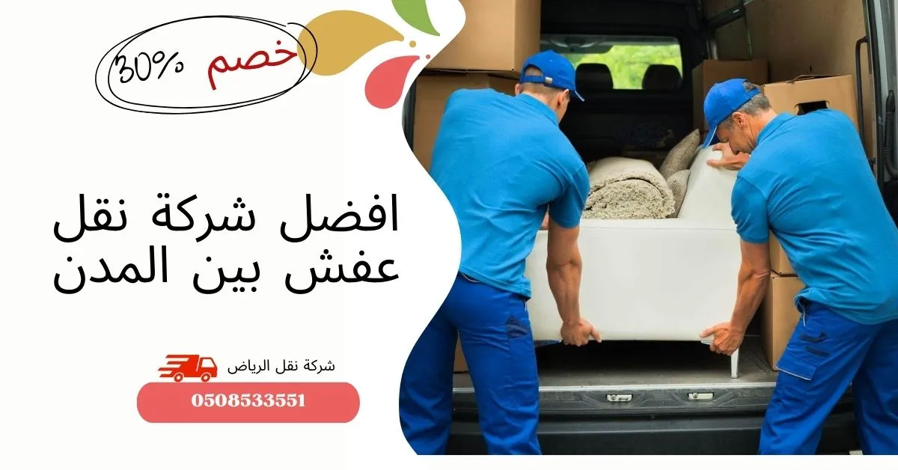

افضل شركة نقل عفش بين المدن

يبحث الكثير من الأشخاص عن افضل شركة نقل عفش بين المدن، حيث تتطلب هذه العملية دقة وخبرة لضمان حماية الأثاث من التلف أثناء النقل لهذا السبب، يلجأ الكثيرون إلى التعاقد مع أفضل شركات نقل الاثاث في السعودية التي تمتاز بالكفاءة والاحترافية، كما توفر هذه الشركات خدمات متكاملة تشمل فك وتركيب الأثاث، التغليف الجيد، واستخدام وسائل نقل حديثة، مثل شركة نقل الرياض ولهذا السبب إذا كنت تبحث عن خدمات موثوقة وآمنة، فإن اختيار شركة متميزة سيمنحك راحة البال وسلامة أثاثك طوال عملية النقل.
افضل شركة نقل عفش بين المدن
تعد افضل شركة نقل عفش بين المدن الخيار الأمثل لمن يبحث عن نقل احترافي وآمن، وهذا بفضل امتلاكها لفريق عمل مدرب وأدوات وتقنيات متطورة، تضمن هذه الشركات تنفيذ جميع خطوات النقل بدقة عالية، حيث تبدأ العملية بتقييم احتياجات العميل ثم التخطيط الدقيق لكل مرحلة من النقل، من التغليف إلى التحميل والتفريغ، كما تعتمد على مركبات مجهزة خصيصًا لنقل الأثاث، مما يضمن حمايته من الصدمات أو العوامل الخارجية بالإضافة إلى ذلك، توفر هذه الشركات خدمات إضافية مثل افكار لتسهيل نقل العفش، والتعامل مع الأجهزة الحساسة، مما يسهم في توفير الوقت والجهد للعملاء، فـ عند اختيار شركة متخصصة يساعد على تقليل المخاطر وضمان تجربة نقل سلسة وخالية من المشاكل.
ارخص شركة نقل عفش
إذا كنت تبحث عن شركة تقدم خدمات نقل عفش بأسعار تنافسية دون المساومة على الجودة، فإن شركة نقل الرياض هي الخيار الأفضل لك، حيث تقدم الشركة عروضًا وخصومات مميزة تناسب مختلف العملاء، مما يجعلها من بين الشركات الأكثر جذبًا في السوق، كما أن فريق العمل المدرب يستخدم أدوات وتقنيات حديثة لضمان نقل الأثاث بأمان وكفاءة، مع توفير الوقت والجهد بالإضافة إلى ذلك، تهتم الشركة بتوفير خدمات إضافية مثل فك وتركيب الأثاث، مما يجعل تجربة النقل مريحة وسلسة، تتميز الشركة أيضًا بالالتزام بالمواعيد والدقة في الأداء، وهو ما يكسبها ثقة العملاء ويجعلها خيارًا مثاليًا لكل من يبحث عن خدمة عالية الجودة وبسعر معقول، لذلك اختيار شركة نقل الرياض يعني الجمع بين الاحترافية والتوفير، مما يجعلها الحل الأمثل لجميع احتياجات النقل.
اسعار شركات نقل العفش بالمملكة
تعد اسعار شركات
نقل العفش بالرياض عمالة فلبينية بالمملكة عاملاً مهماً يؤثر على اختيار العملاء، حيث تسعى معظم الشركات إلى
تقديم أسعار تنافسية تتناسب مع جودة الخدمة، كما تضمن الشركات المتخصصة في هذا المجال خدمات تغليف شاملة باستخدام
مواد عالية الجودة لحماية الأثاث من الخدوش أو التلف أثناء النقل، كما تقدم خدمات إضافية مثل فك وتركيب الأثاث
باحترافية، مما يوفر الوقت والجهد على العملاء كما تعتمد أيضًا الأسعار على حجم الأثاث والمسافة بين المواقع، مع
وجود خيارات مرنة تناسب جميع الميزانيات.
توفر أيضًا الشركات الرائدة في المملكة عروضًا موسمية وخصومات مميزة لجذب العملاء وضمان رضاهم بالإضافة إلى ذلك، تحرص الشركات على توظيف فرق عمل
مدربة تضمن سرعة التنفيذ ودقة الأداء تعتمد الشركات على سيارات مخصصة للنقل مزودة بأحدث التقنيات لضمان سلامة الأثاث
أثناء الرحلة، هذه المزايا تجعل شركات نقل العفش بالمملكة الخيار الأمثل، حيث يتم تحقيق التوازن بين التكلفة والجودة
لضمان خدمة تلبي تطلعات العملاء.
شركات فك وتركيب ونقل الأثاث
توفر ارقام شركات فك وتركيب ونقل الأثاث خدمة متكاملة تجمع بين النقل الآمن والاحترافي للأثاث مع ضمان إعادة تركيبه بأعلى دقة، سواء كان النقل داخل المدينة أو بين المدن، تقوم الشركات المتخصصة بتوفير فرق عمل مدربة على فك الأثاث بعناية لتجنب أي تلف، ثم يتم نقله باستخدام سيارات مجهزة ومخصصة لهذا الغرض، بعد الوصول إلى المكان الجديد يتم تركيب الأثاث بنفس الاحترافية لضمان عودته إلى حالته الأصلية.
مزايا خدمات فك وتركيب الأثاث
تتميز هذه الشركات بتوفير خدمة التعبئة والتغليف باستخدام مواد عالية الجودة التي تحمي الأثاث من الصدمات والخدوش، كما أن عملية فك الأثاث تتم بعناية لتجنب أي تضرر للأجزاء الحساسة مثل الأجهزة الكهربائية أو القطع الزجاجية بعد النقل، يقوم الفنيون المعتمدون بتركيب الأثاث في المكان المطلوب مما يضمن إستقرار القطع ويقلل من أي جهد قد يبذله العميل، بعض الشركات تقدم أيضًا خدمات صيانة وإصلاح الأثاث إذا لزم الأمر، مما يجعلها الخيار المثالي لمن يسعى للحصول على خدمات شاملة.
- نقوم بتوفير فريق عمل مدرب على أعلى مستوى ولدية خبرة في التعامل مع كافة أنواع الأثاث.
- نحن نحرص جيدًا على فك وتغليف الأثاث بأفضل الطرق وباستخدام أفضل أنواع التغليف.
- تنسيق الأثاث وفك بدقة للحفاظ عليه.
- نوفر خدماتنا طوال أيام الأسبوع وعلى مدار 24 ساعة.
- نقدم عروض وخصومات مميزة تصل إلى 30%.
أهمية شركات نقل عفش
تعتبر شركات نقل العفش من العوامل الأساسية التي تساهم في تسهيل عمليات الانتقال بين المنازل أو المكاتب بشكل آمن وفعال، عند التعامل مع هذه الشركات يتجنب العملاء العديد من المخاطر التي قد يتعرضون لها عند القيام بنقل العفش بأنفسهم، مثل حدوث أضرار للأثاث أو تضرر الأثاث أثناء عملية النقل.
أهمية شركات نقل العفش
- الأمان والحماية: توفير حماية كاملة للأثاث من خلال التغليف الجيد باستخدام مواد متخصصة.
- الكفاءة والسرعة: تمتلك الشركات المعدات والفنيين المدربين على القيام بالعملية بشكل سريع وفعال ووجود سيارة نقل عفش مكة.
- الراحة النفسية: تساهم الشركات في تقليل الجهد والضغط النفسي على الأفراد خلال الانتقال.
- الخبرة الفنية: توفر الشركات فرقًا متخصصة تضمن عدم وجود أي أخطاء أثناء الفك والتركيب.
شركات نقل الاثاث في الرياض
تعد شركات نقل عفش بالرياض من الخيارات المثالية، وهذا للأشخاص الذين يحتاجون إلى نقل أثاثهم بطريقة آمنة وسريعة، حيث تقدم هذه الشركات خدمات متنوعة مثل التعبئة، فك الأثاث، النقل، والتركيب، مما يسهل على العملاء الانتقال بين الأماكن المختلفة دون القلق من الأضرار التي قد تحدث للأثاث، كما تمتاز شركات نقل الأثاث في الرياض بتقديم خدمات على مستوى عالٍ من الجودة، مع الحرص على استخدام أحدث التقنيات والمعدات لتأمين الأثاث بشكل احترافي.
مميزات افضل شركة نقل عفش بين المدن
- الكفاءة والسرعة: الشركات تتمتع بفرق عمل مدربة جيدًا، مما يضمن تنفيذ عملية النقل بسرعة وكفاءة.
- أمان الأثاث: يتم استخدام مواد تغليف عالية الجودة لحماية الأثاث من أي أضرار أثناء النقل.
- خدمات متكاملة: تشمل الخدمات التعبئة، الفك، التركيب والنقل، مما يوفر وقت العملاء وجهدهم.
- أسعار تنافسية: تقدم الشركات عروضًا وخدمات بأسعار معقولة مقارنة بالخدمات الأخرى.
- توفر النقل داخل وخارج الرياض: تسهل هذه الشركات عملية النقل بين الرياض والمناطق الأخرى.
الأسئلة الشائعة حول افضل شركة نقل عفش بين المدن
كيف يمكنني اختيار شركة نقل عفش موثوقة وبأسعار مناسبة؟
لضمان اختيار شركة موثوقة، تحقق من تقييمات العملاء السابقة، واسأل عن خدماتهم الإضافية مثل فك وتركيب الأثاث، قم باختيار الشركات ذات السمعة الجيدة تقدم أسعارًا شفافة تناسب مختلف الميزانيات.
ما الذي يجعل شركة نقل الرياض الخيار الأمثل لنقل العفش؟
شركة نقل الرياض تجمع بين الجودة والسعر المناسب، توفر خدمات احترافية تشمل التغليف الآمن والنقل السريع بأسعار تنافسية، مما يجعلها خيارًا مثاليًا للعملاء الباحثين عن توفير دون التنازل عن الجودة.
في الختام تعد افضل نقل عفش بين المدن تتطلب الاعتماد على عمالة ذات خبرة وتميز لضمان سلامة ممتلكاتك أثناء التنقل فعند اختيار شركة نقل موثوقة، يمكنك الاستفادة من خدمات عالية الجودة تعزز من راحة بالك، سواء كنت تنقل منزلك أو مكتبك، فإن التعامل مع شركة محترفة سيوفر لك الوقت والجهد، ويضمن حماية أثاثك من التلف، لا تتردد في اتخاذ القرار الصحيح لضمان تجربة نقل مريحة وخالية من التوتر، حيث تبقى جودة الخدمة هي العامل الأساسي لراحة العملاء.